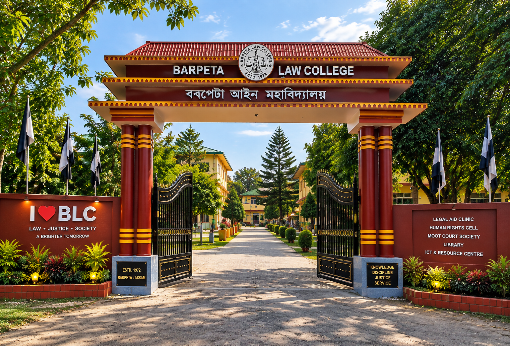
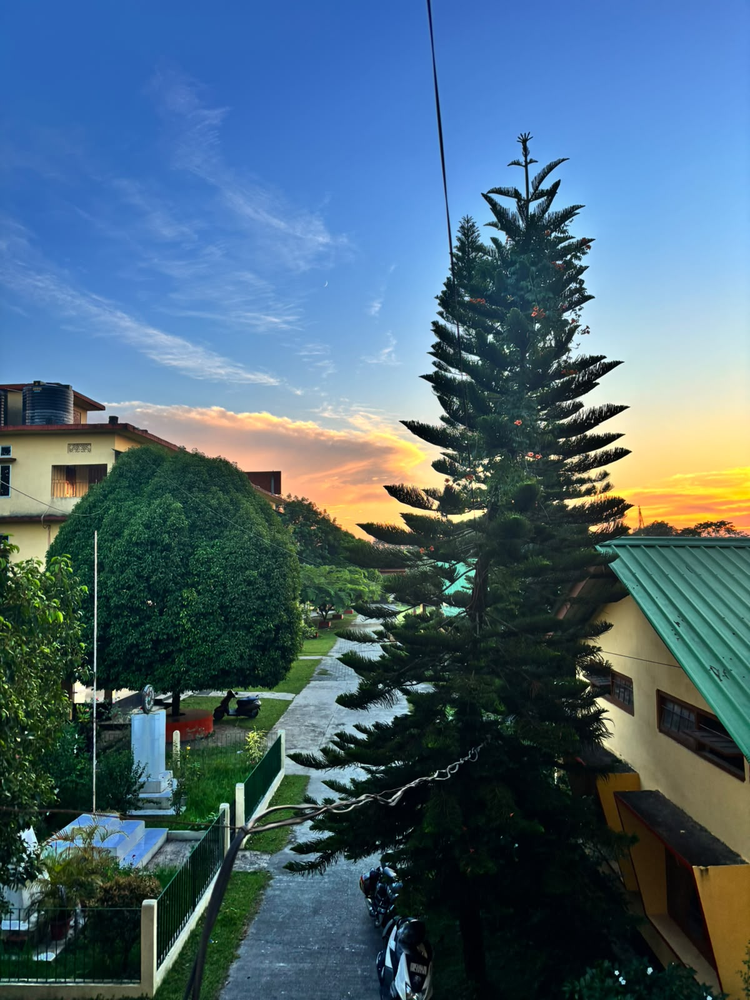
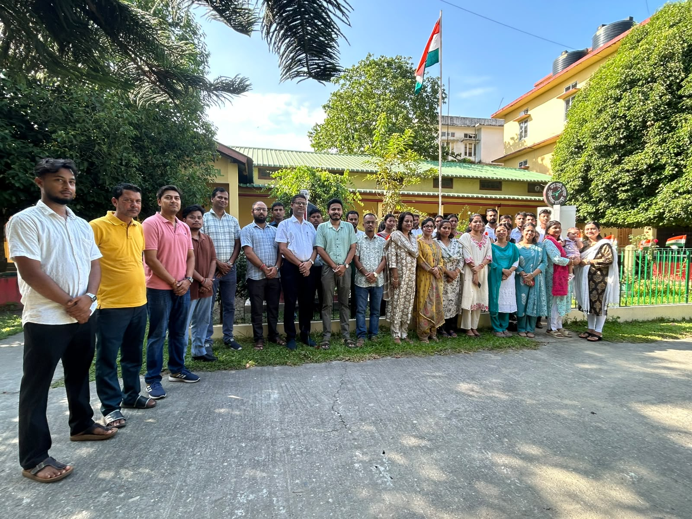
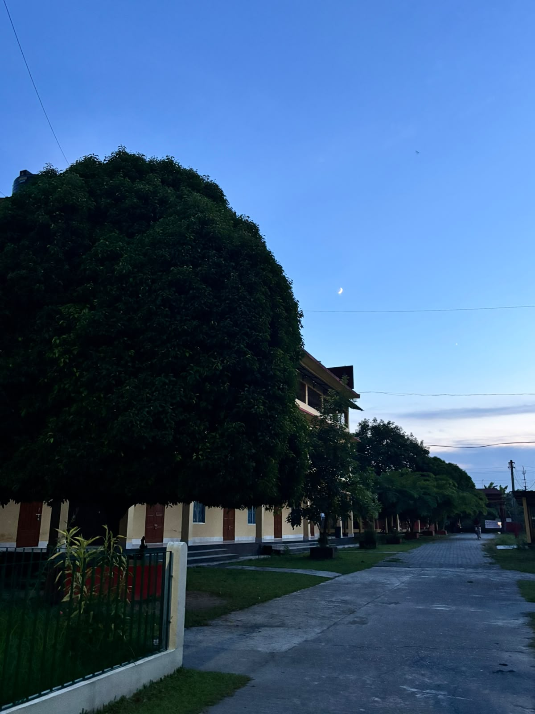
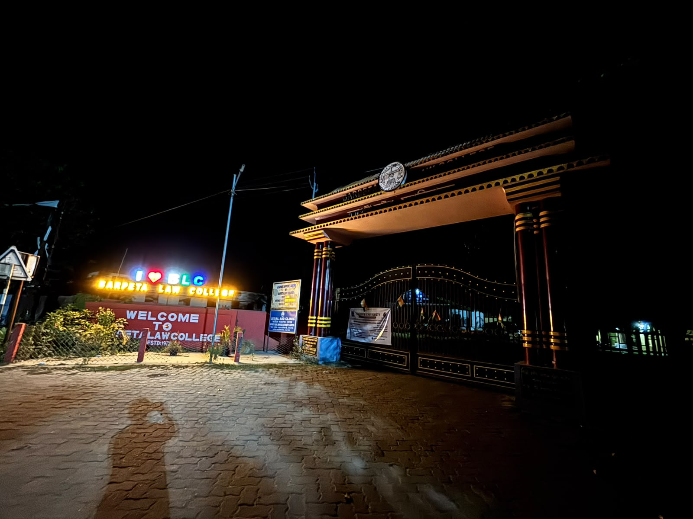

1972
BARPETA LAW COLLEGE · DIGITAL CAMPUSWhere institutional work
Where institutional work
moves forward.
A focused digital environment for the people, records and everyday work that keep Barpeta Law College connected.
§
LEGAL EDUCATIONBARPETA · ASSAMEstablished with a commitment to legal education and institutional service.
01 · OUR CAMPUS
Barpeta Law College
A legacy of legal education in Barpeta since 1972.
Discover the College →




ACADEMIC BLOCK01 / 05
01 · THE WORKSPACE
Built around the college day.
One place to move from professional records to internal correspondence and institutional requests without losing context.
Your professional desk,
online.
Profiles, qualifications, documents, confidential notes, applications, requests and official notifications stay together in one secure workspace.
Open Staff Workspace →01
Notes & Correspondence
Structured confidential communication designed for institutional work.
02Requests & Applications
Prepare, submit and follow institutional requests from one place.
0302 · SECURE ACCESSTwo roles.
Two roles.
One institutional system.
The Institutional Portal separates staff work from Institute Head decision-making while keeping both sides connected to the same official workflow.
Open the Institutional Portal ↗PORTALSECURE ACCESS
01Institute HeadPrincipal-cum-Secretary
02Staff WorkspaceFaculty & Staff
03 · QUICK ACCESS
COLLEGEAbout Barpeta Law College→CONNECTContact & Information→SECUREInstitutional Portal→